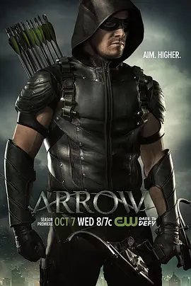

6.8
绿箭侠 第四季
Arrow Season 4
2015
美国
评分 6.8
导演:
托尔·弗罗伊登塔尔 / 约翰·贝林 / 詹姆斯·班福德
演员:
斯蒂芬·阿梅尔 / 大卫·莱姆希 / 艾米莉·贝特·理查兹 / 凯蒂·卡西迪 / 薇拉·贺兰德
类型:
动作,悬疑,犯罪
剧情简介
经历短暂的安稳生活后，Oliver 与 Felicity 的隐退仿佛只是暴风雨前的宁静。星城的街道再次被不明势力搅动，夜色下的巡逻警灯频繁闪烁，治安节点不断失守。新闻广播里掠过的陌生符号、无法解释的破坏痕迹，都让这座城市像在被某种看不见的力量慢慢吞噬。当 Oliver 得知 Diggle 与 Laurel 仍在艰难支撑，心底的责任感最终把他重新拉回了那片熟悉的阴影。回到城市的第一夜，他站在高楼边缘，风卷起披风的声响，与脚下的星城形成冷峻的对照。他的身手比过去更加稳健，却也因为久未作战而带着几分犹疑。队友们在灯光下重新集结：Felicity 的指令依旧干脆明亮，Diggle 的目光中藏着旧伤与不信任，Laurel 的行动更显强硬，每个人都被这座城市逼着成长，也被彼此的选择推向新的距离。然而，这次面临的并非单纯的犯罪势力。一股笼罩全城的诡异力量以宗教般的狂热渗入街头巷尾，他们的行动沉默、迅速、有条不紊，仿佛对城市的命运怀有扭曲的使命感。Oliver 在追踪线索时不断陷入迷雾，敌人的每一次现身都带着超越常规理解的诡异意味，让他不得不重新审视自己身为“绿箭”的定位。随着冲突升级，团队间的裂痕与城市中的不安同步扩大。过去的秘密开始影响每一次抉择，而新敌人的步伐也愈发靠近。Oliver 必须在混乱中稳住队友，也必须决定是否愿意以一种新的方式守护星城——即便这意味着他必须面对超出自身能力范围的力量。